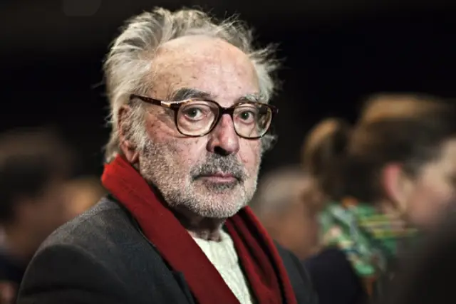

Luz, câmera e Godard – CCBB e CineSesc exibem filmografia do cineasta

Acontece do dia 21 de outubro a 2 de dezembro, a Retrospectiva Jean-Luc Cinéma Godard, no CCBB (Centro Cultural Banco do Brasil), nas cidades São Paulo, Rio de Janeiro e Brasília e no CineSesc (SP). A mostra é uma homenagem aos 85 anos do cineasta franco-suíço que serão completados em 3 de dezembro.
Primeiramente sendo exibido no CCBB, o evento acontece do dia 21 de outubro a 30 de novembro. Já no CineSesc (SP), a data marcada para dar continuidade na mostra vai do dia 26 de novembro a 2 de dezembro.
A exibição traz como destaque o documentário “One Plus One” de 1968. Na produção, Godard combina documentário e encenações ficcionais de registros de ensaios e gravações dos Rolling Stones. Nas ocasiões, a música em questão é o clássico “Sympathy for The Devil”. Além das cenas dos Stones lapidando e gravando a canção, o filme traz discursos e ações sobre a política e a estética do ano de 1968.
Além dessa, várias outras obras do cineasta serão exibidas na mostra. Entre elas duas raridades de sua filmografia: exibidas pouquíssimas vezes, estarão a disposição do público uma reconstituição do longa-metragem “Salve a vida (quem puder)” Sauve la vie (qui peut) e um episódio abandonado de “Seis vezes dois” (Six fois deux).
São mais de 60 anos de carreira e um total de 104 obras. Os trabalhos do produtor dividem-se entre longas, médias e curtas-metragens, séries televisivas, filmes publicitários e vídeo-cartas – todos eles abordando os mais variados temas.
Os presentes também terão a sua disposição cursos e palestras gratuitos com convidados nacionais e internacionais, nos dias 5 e 6 de novembro; e mesas de debates no dia 14 de novembro.
A programação da mostra pode ser conferida aqui.
Segue abaixo uma lista dos filmes de Godard que serão exibidos:
Operação concreto (1954)–JLG–20’–35mm–PB–Classificação indicativa: L
Documentário sobre a construção da barragem da Grande-Dixence, nos Alpes Suíços, filmado durante a fase de concretagem da obra. A narração, escrita por Godard e pelo engenheiro Jean-Pierre Laubscher, exalta a monumentalidade da empreitada, que consegue domesticar a hostilidade do clima e do relevo.
Uma mulher faceira (1955) – JLG – 10’ – DVD– PB – Classificação indicativa: 14
Agnès, uma jovem burguesa de Genebra, escreve carta para uma amiga contando como acabara de trair o marido. Fascinada pelos gestos e atitudes adotados por uma prostituta para atrair seus clientes, Agnès decide imitá-la e seduz o primeiro homem que vê, em um banco de jardim.
Todos os rapazes se chamam Patrick (Charlotte e Véronique) (1957) – JLG – 21’ – Blu-ray – PB – Classificação indicativa: 12
Charlotte e Véronique, jovens universitárias, dividem um apartamento em Paris. Depois de um desencontro no parque, conversam sobre os rapazes que conheceram sem perceberem que se trata da mesma pessoa.
Uma história de água (1958)–JLG–18’–Beta digital–PB–Classificação indicativa: 10
Uma jovem planeja viajar a Paris, de ônibus, mas descobre que seu jardim e toda a cidade de Villeneuve-Saint-Georges estão inundados. Com um barco e uma bicicleta, ela consegue passar para o lado da cidade que está protegido da inundação. Ela pega carona com outro jovem e juntos, após flertarem ao longo do caminho, eles finalmente alcançam a Torre Eiffel.
Charlotte e seu namorado (1959) –JLG – 20’– Beta digital –PB – Classificação indicativa: L
Num quarto de hotel em Paris, Jules recebe a visita da ex-namorada, Charlotte. Entre resignação e orgulho, ele revela os motivos pelos quais acredita que a relação entre os dois chegou ao fim e espera que a moça volte para ele. Jules, porém, será surpreendido pelas atitudes de Charlotte.
Acossado (1959)– JLG – 87’– 35 mm –PB –Classificação indicativa: 14
Feito com baixo orçamento, “Acossado” narra a trajetória de Michel Poiccard, um ladrão que mata um policial. De volta a Paris, Michel reencontra Patricia, uma estudante norte-americana com quem manteve um relacionamento. Enquanto perambula pela cidade, o ladrão ensaia retomar a relação com Patricia, mas ela o denuncia à polícia.
O pequeno soldado (1960) – JLG –88’– 35 mm–PB – Classificação indicativa: 14
Na Genebra do início dos anos 1960, agentes secretos se engajam em um combate cujo pano de fundo é a Guerra da Argélia. O repórter francês Bruno Forestier é coagido a participar do embate pelos colegas, membros de um grupo direitista em luta contra os revolucionários da FLN argelina.
Uma mulher é uma mulher (1961) – JLG– 84’ – 35 mm –COR– Classificação indicativa: 16
Nos conflitos de triângulos amorosos, escreveu o poeta Rilke, um é excesso e dispensável. Angela deseja ter um filho com urgência, de preferência com seu namorado, mas ele, sem pressa de um projeto familiar e irritado pela insistência de Angela, pede para ela ser engravidada por um amigo do casal
A preguiça (1961), 5º episódio de “Les sept péchés capitaux”, 7 episódios de JLG – JLG –15’– 35 mm –PB –Classificação indicativa: 16
Um ator famoso por papéis de sedutor é abordado por uma jovem atriz, que tenta, em vão, seduzi-lo. Ao chegar ao apartamento dela, a garota insiste, despe-se, circula nua, mas ele se cansa só de pensar que depois de fazer amor será preciso vestir a roupa.
Viver a vida (1962) – JLG–85’ – Blu-ray–PB – Classificação indicativa: 16
Recém-separada, Nana trabalha em uma loja de discos e sonha em ser atriz. Despejada por não pagar o aluguel de seu apartamento, ela passa a se prostituir, primeiro casualmente, e então profissionalmente, conduzida por Raoul, um cafetão.
O novo mundo (1962), 2º episódio do filme RoGoPaG– JLG – 20’ – PB – Classificação indicativa: 14
Após acordar de um longo sono, um homem descobre ser o único sobrevivente de uma explosão nuclear que alterou a ordem de tudo e pôs fim à lógica. A mulher que ama passou a se comportar de modo anômalo e até mesmo ícones parisienses como o Arco do Triunfo e a Torre Eiffel deixaram de ser o que foram.
Tempo de guerra (1963) – JLG – 80’ – 35 mm –PB – Classificação indicativa: 12
Durante uma guerra, camponeses são convocados para lutar em nome do rei. Os emissários do soberano convencem esses indivíduos prometendo riquezas e incríveis experiências de vida. Depois de combates sangrentos, eles voltam para casa e mostram às suas mulheres tudo o que conseguiram em suas aventuras.
O grande trapaceiro (1963), episódio do filme “Les plus belles escroqueries du monde” – JLG – 20’ –35mm – cor – Classificação indicativa: L
Uma repórter norte-americana está em Marrakech em busca de histórias verdadeiras e acaba presa durante uma compra, acusada de usar dinheiro falso. Durante um interrogatório, ela diz fazer documentários e é liberada. Em seguida, encontra um homem suspeito da trapaça e, ao tentar entrevistá-lo, perde suas certezas.
O desprezo (1963) – JLG – 100’ – 35 mm –COR– Classificação indicativa: 16
Baseado no livro homônimo de Alberto Moravia, o filme conta a história de um roteirista que hesita em reescrever uma adaptação da Odisseia: ele é movido pelo amor à mulher, mas ela passa a desprezá-lo após conhecerem o truculento produtor do projeto cujo diretor é o homérico Fritz Lang.
Banda à parte (1964) – JLG –95’–35 mm –PB – Classificação indicativa: L
A ingênua Odile se envolve com uma dupla de bandoleiros e revela a existência de uma fortuna escondida na casa de sua tia. Franz e Arthur armam um plano para roubar o dinheiro e seduzem Odile, envolvendo-a nessa trama absurda e mal planejada. Às vésperas do assalto, eles matam o tempo com frivolidades.
Uma mulher casada (1964) – JLG –98’ – 35 mm –PB – Classificação indicativa: 16
Casada com um Pierre, piloto de avião, Charlotte encontra seu amante – um outro Pierre, ator de teatro – durante as frequentes ausências do marido, mas não sabe qual dos dois escolher. As coisas se complicam quando ela se descobre grávida, mas não sabe quem é o pai.
Montparnasse – Levallois (1965), episódio do filme “Paris vu par”–JLG – 18’ – COR– Classificação indicativa: L
Montparnasse et Levallois integra uma obra coletiva de cineastas franceses chamada “Paris vu par”, filme de 1965. No curta, a atriz Joanna Shimkus é Monica, uma garota que envia por engano duas cartas trocadas para seus dois amantes, um escultor em Montparnasse e um mecânico em Levallois e agora tenta reencontrá-los para desfazer o mal entendido.
Alphaville (1965) – JLG – 98’ – 35 mm –PB – Classificação indicativa: 12
O agente Lemmy Caution chega a Alphaville, cidade futurista comandada por uma inteligência artificial que ele precisa destruir. Lemmy também deve libertar Natasha von Braun daquele lugar, onde palavras como “amor” e “por quê?” foram proibidas.
O demônio das onze horas (1965)–JLG –110’ –35 mm –COR– Classificação indicativa: 12
Ferdinand é um professor de espanhol que acaba de perder seu emprego na televisão. Ele e sua mulher, uma italiana rica, vão a uma festa burguesa e contratam a babá Marianne para ficar com seus filhos. Após uma noite desesperadora, Ferdinand volta para casa sozinho e seduz a babá. Juntos, Ferdinand e Marianne partem em direção ao sul do país e acabam se envolvendo com tráfico de armas e conspiração política.
Masculino, feminino (1966) – JLG – 110’ – 35 mm –PB – Classificação indicativa: 10
Paul trabalha como pesquisador. Ele torna-se amante de Madeleine, uma jovem cantora, mas se encanta também por Elisabeth. Interessado pelo perfil das garotas francesas dos anos 1960, Paul é levado a participar de causas sociais.
Made in U.S.A. (1966)–JLG –90’ – 35 mm –PB – Classificação indicativa: 10
Paula é uma jovem jornalista que parte para uma pequena cidade francesa a fim de encontrar seu marido. Chegando lá, ela descobre que ele foi assassinado e começa a investigar as causas do crime. Em sua busca por descobrir a verdade sobre a morte de seu marido, Paula se depara com o submundo da política, uma engrenagem de conspirações, espionagens, traições, facções partidárias e informações manipuladas. Sua trajetória revela a crua imagem da sociedade moderna de consumo e seus vínculos com grupos partidários atuantes na política francesa antes de maio de 68.
Duas ou três coisas que eu sei dela (1966) – JLG –90’ – DVD –PB – Classificação indicativa: 12
Tendo como pretexto a exposição em forma descontínua e auto-reflexiva de fragmentos da vida cotidiana de Juliette, dona de casa, prostituta e moradora de um dos novos conjuntos habitacionais dos subúrbios de Paris, compõe-se um painel da sociedade de consumo francesa.
Antecipação ou o amor no ano 2000(1967) – JLG–20’ – 35 mm –COR – Classificação indicativa: L
Um viajante chega à Terra e quer experimentar o amor. O governo, que controla a prostituição, envia-lhe uma garota, que ele recusa, pois ela entrega-se muda, o que não o excita. Outra garota se nega a tirar a roupa, mas recita poemas. Eles redescobrem uma outra forma do amor, o beijo.
Câmera-olho (1967) Episódio do filme “Loindu Vietnam”– JLG – 15’ – 35 mm –COR – Classificação indicativa: L
Obra coletiva e anônima, “Longe do Vietnam” é um filme militante concebido como peça de solidariedade ao Vietnã do Norte frente à agressão imperialista e militar dos Estados Unidos. Conjugando diferentes situações, perspectivas e experimentações formais, o filme procura retratar a barbárie da guerra e os protestos contra sua continuidade.
A chinesa (1967)–JLG –95’ – 35 mm –COR– Classificação indicativa: 16
No verão, cinco estudantes usam um apartamento emprestado para criar uma célula maoísta. Estudam, fazem seminários, teatro e depõem para um filme. Mas quando se desentendem, o grupo se desfaz. Véronique, uma das estudantes, assassina um ministro soviético e, por engano, outra pessoa.
O amor (1967), episódio do filme Amore et Rabbia– JLG –26’ –DVD – COR – Classificação indicativa: 12
Separados por concepções opostas de democracia e de revolução, dois jovens noivos renunciam ao amor.
Week-end à francesa (1967)–JLG –95’–35 mm – COR – Classificação indicativa: 16
Um casal burguês faz uma viagem de fim de semana ao interior da França com o objetivo de reclamar uma herança familiar. No caminho, eles se deparam com um gigantesco engarrafamento, vagando por um cenário de violência crescente, que inclui acidentes de trânsito, estupro, assassinatos e canibalismo.
A gaia ciência (1968)–JLG–95’–35 mm – COR –Classificação indicativa: L
Filmado antes e montado depois de maio de 1968, “Le gaisavoir” realiza um encontro entre a aspiração revolucionária e os últimos lampejos da Nouvelle Vague e de suas estrelas, Jean-Pierre Léaud, astro desde o início, e a nova vedete, Juliet Berto. O filme, produzido pela televisão francesa (a ORTF) não foi exibido na TV nem projetado nas salas de cinema, e sofreu uma censura parcial (Godard manteve os “bips” para inscrever de maneira audível a censura em seu filme). Infantil e libertário como a Nouvelle Vague e 1968, melancólico e revoltado como o pós-68, o filme é inclassificável do ponto de vista de uma história linear do cinema ou das ideias.
Cine-panfletos (1968)–JLG –de 2’’ a 4’’ cada – Blu-ray–PB – Classificação indicativa: L
É comum ler ou ouvir que os cinétracts [cine-panfletos], tidos como iniciados por Chris Marker, foram realizados durante o movimento de maio de 1968, mas a maior parte deles foi realizada depois. Doze deles são identificados como tendo sido feitos por Godard. Ele os intitula Filmtract[filme panfleto], seguidos de um número. Para realizar alguns deles, Godard contou com a ajuda técnica do diretor de fotografia Armand Marco, que pouco depois se juntaria ao grupo Dziga Vertov.
Um filme como os outros (1968)–JLG –100’ – 16mm –PB e COR– Classificação indicativa: L
Produzido entre julho e agosto de 1968, “Um filme como os outros” é a primeira reflexão de Godard sobre os acontecimentos do maio de 68. Ainda era cedo para estabelecer uma imagem definidora do maio de 68, senão a da construção e empreendimento imprevisível.
Um mais um (1968)–JLG – 99’ –DVD –COR– Classificação indicativa: 14
Em um arranjo polifônico e ensaístico, Jean-Luc Godard combina documentário e encenações ficcionais alternando o registro dos Rolling Stones durante os ensaios e gravações da canção “Sympathy for the devil” com discursos e ações sobre política e estética no fulgurante ano de 1968.
British Sounds (1969)–JLG –52’ – 16 mm –COR – Classificação indicativa: L
A linha de montagem de uma fábrica automotiva, uma mulher nua, leituras do “manifesto do partido comunista”, uma conversa entre metalúrgicos, lembranças das revoltas camponesas na Inglaterra, isso e um pouco mais ainda, cabe no caldeirão de “British Sounds”. O filme, fragmentado por princípio, figura o complexo caldo de questões que pairavam sobre a classe trabalhadora inglesa no fim dos anos 60. O desafio político que os trabalhadores enfrentam é similar a empreitada estética que o filme se propõe: criar uma nova forma de organização para solapar uma estrutura conservadora e opressora.
Pravda (1969)–JLG–58’–Beta digital–COR– Classificação indicativa: L
Encomendado pela West German Television, o filme propõe uma análise maoísta da delicada situação da Tchecoslováquia no final dos anos 1960, poucos meses depois da invasão soviética.
Vento do leste (1969)–JLG – 100’ –16mm – COR – Classificação indicativa: L
Filme ensaio que discute os (des)caminhos do cinema revolucionário e da revolução socialista tomando como ponto de partida a desconstrução de um dos mais conhecidos gêneros cinematográficos: o western.
As lutas ideológicas na Itália (1970)–JLG –60’ – 16mm–COR – Classificação indicativa: L
Paola Taviani é uma maoísta que tenta entender como se pode lutar pela revolução. Por meio dela, o filme interroga os diferentes aspectos, até contraditórios, da vida de uma militante. Enfim, a própria atriz dirige sua mensagem ao espectador televisivo.
Vladimir e Rosa (1971)–JLG – 103’ – 16mm–COR– Classificação indicativa: L
Recriação do julgamento dos Oito de Chicago, quando importantes ativistas norte-americanos acabaram indiciados pelos tumultos na convenção do partido democrata de 1968.
Schick (1971)–JLG – 45’’ – DVD – COR– Classificação indicativa: L
A loção pós-barba Schick tem o poder de reconciliar um casal.
Tudo vai bem (1972)–JLG –95’ –35mm–COR– Classificação indicativa: 12
França, 1972. Uma fábrica de produtos alimentícios está em greve e os operários sequestram o patrão. Uma jornalista norte-americana e seu marido, cineasta ex-integrante da Nouvelle Vague,que agora se dedica a filmes publicitários, são aprisionados junto com o diretor da fábrica.
Carta para Jane (1972) – JLG –52’–16mm –COR– Classificação indicativa: L
Realizado para acompanhar as projeções de “Tout vabien” em festivais em 1972, esta colaboração entre Godard e Jean-Pierre Gorin parte de uma fotografia de Jane Fonda publicada em um semanário francês para trabalhar uma modalidade de ensaísmo que seria reinventada em várias ocasiões na carreira posterior de Godard.
Aqui e acolá (1974) – JLG –55’ – 16mm – COR – Classificação indicativa: L
Em 1970, Godard e Gorin filmam os fedayin e a resistência palestina na Jordânia. Intitulado “Jusqu’àlavictoire”, esse documentário ganha um novo olhar e outra escuta ao passar pela mesa de montagem de “Ici et ailleurs”, sob o crivo da conversação entre Godard e Anne-Marie Miéville.
Número dois (1975)–JLG – 88’–35mm–COR– Classificação indicativa: 16
Realizado em colaboração com Anne-Marie Miéville, Numéro deux examina os conflitos em torno da vida doméstica, sexo e trabalho de uma família francesa em um claustrofóbico apartamento moderno. O filme organiza-se por justaposições de dualidades, entre elas som e imagem, cinema e vídeo.
Como vai você? (1975)–JLG – 78’ –16mm–COR– Classificação indicativa: L
Um jornalista militante sindical participa da gravação de um documentário dentro da gráfica de um jornal comunista. É a oportunidade para uma reflexão sobre os processos de produção, tratamento e mau-tratamento da informação pelo jornalista.
Seis vezes dois: sobre e sob a comunicação (1976) – JLG –610’– Vídeo –COR – Classificação indicativa: 12
“Six fois deux (Sur et sousla communication)” é uma série de doze programas de televisão: seis dípticos, em que a primeira parte é um ensaio crítico (sobre o desemprego, sobre a mídia e sobre a própria série) e a segunda é constituída de entrevistas feitas por Godard com personalidades diversas.
France tour détour deux enfants (1977-1978) – JLG–12X26’ – Vídeo –COR– Classificação indicativa:L
Nesta série televisiva, produzida para o canal Antenne2, Godard e Miéville continuam seu percurso em direção a uma posição crítica da comunicação, tomando emprestado códigos televisivos – reportagens, chamadas de matéria, entrevistas, clipes –, criando uma espécie de antitelevisão.
Roteiro de Salve-se quem puder (a vida) (1979) – JLG –20’ – Beta spprint–COR – Classificação indicativa: 12
Jean-Luc Godard faz uma espécie de diário de seu processo de criação. Godard faz referência, em palavras e em imagens, ao seu projeto “Sauve qui peut (lavie)”: os personagens, suas respectivas trajetórias e suas relações; a forma em que as imagens e as sequências deverão interpretar o diálogo; o uso de câmera lenta que nos faz perceber o que devíamos ver.
Salve-se quem puder (a vida)(1979) – JLG –87’ – 35mm –COR– Classificação indicativa: 12
As angustias e aspirações dos homens e das mulheres diante de uma sociedade que os esmaga.
Carta à Freddy Buache(1982)–JLG –11’ –35mm –COR– Classificação indicativa: L
Godard foi contratado para dirigir um vídeo comemorativo do 500º aniversário da cidade de Lausanne. Essa é sua recusa em forma de filme.
Paixão, o trabalho e o amor: introdução a um roteiro, ou Terceiro estado do filme Paixão (1982) – JLG –30’ – DVD/vídeo–COR–Classificação indicativa: L
Em uma fábrica da província, há uma guerra desgastante entre o patrão e uma trabalhadora que quer criar uma seção sindical. A mesma situação pode ser encontrada no hotel da esquina, entre a população local e a equipe técnica dos filmes.
Paixão(1982)–JLG–87’ –35mm –COR– Classificação indicativa: L
Enquanto seu país vive uma crise política, Jerzy, um cineasta polonês tenta rodar, na Suíça, um filme no qual imita quadros de grandes pintores como Goya e Rembrandt. Os produtores fazem pressão, mas as filmagens parecem não avançar. Enquanto procura formas de realizar sua ideia, o diretor se envolve com Hanna, a dona do hotel onde a equipe está hospedada e com Isabelle,uma jovem operária que acaba de ser demitida pelo marido de Hanna.
Roteiro do filme Paixão(1982)–JLG –53’ –Beta spprint–COR– Classificação indicativa: L
O final de Paixão (“Passion”, 1981) é o início de seu roteiro (“Scenàrio du film Passion”, 1982). Tendo vivido o intenso triângulo amoroso com Jerzy e agora na estrada em direção a Polônia, Hanna dirá a Isabelle: “Deixe de história. Acabou. Já tinha acabado quando começou.” A paisagem enevoada de um filme quase por terminar encontrará a tela em branco do roteiro que se inicia.
Mudar de imagem. Carta à bem-amada (1982), episódio da série “Le changement à plus d’um titre”– JLG –9’ 50’’– Cópia digital –COR– Classificação indicativa: L
Em 1981, quando a esquerda chegou ao poder na França, com François Mitterrand, a televisão estatal francesa produziu uma série de curtas sobre o tema da mudança. Um dos filmes foi encomendado a Godard. Num tom zombeteiro e provocador, o diretor explica por que não honrou a encomenda.
Carmen de Godard (1982)–JLG –85’–35mm–COR–Classificação indicativa: 14
Carmen participa de um grupo terrorista que assalta um banco. No meio do assalto, ela conhece Joseph, segurança do banco, e se apaixona. Eles fogem para o litoral, mas o romance desanda, ao passo que o grupo de Carmen planeja uma nova operação num hotel.
Pequenas notas sobre o filme Eu vos saúdo, Maria (1983) – JLG –25’ – Beta soprint – COR – Classificação indicativa: 18
Enquanto se prepara para filmar “Je vous salue, Marie”, Godard conversa com a atriz Myriem Roussel sobre seu método de trabalho, relaciona cinema e música ao lado da parceira Anne-Marie Miéville, faz alguns testes de cena e finaliza a escrita dos diálogos.
Eu vos saúdo, Maria (1983) – JLG – 72’ – 35mm –COR – Classificação indicativa: 18
A jovem Maria ajuda o pai num posto de gasolina, namora um motorista de táxi e joga basquete. Virgem, ela se descobre grávida. Um homem a informa de que ela espera o filho de Deus. Releitura provocativa do arquétipo da mãe de Jesus. Godard discute sagrado e profano, desejo e fé e corpo e espírito.
Detetive(1984)–JLG – 95’–35mm–COR–Classificação indicativa:16
Num hotel de luxo parisiense, dois detetives investigam um crime. No mesmo ambiente, boxeadores aguardam uma importante luta, um casal está em crise e um mafioso pretende tumultuar as coisas.
Soft and hard (1985) – JLG – 52’ – Beta sp print –Classificação indicativa: L
Jean-Luc Godard e Anne-Marie Miéville conversam sobre seus filmes e sobre o cinema, enquanto realizam tarefas domésticas.
Grandeza e decadência de um pequeno negócio de cinema (1985)–JLG –91’ – Cópia digital–COR–Classificação indicativa: 12
O nascimento de um filme. Seleção de elenco, captação financeira, preservação do impulso criativo, eis alguns dilemas enfrentados pelo realizador Gaspard Bazin (simbólico nome interpretado pelo simbólico Jean-Pierre Léaud), agravados na relação com o produtor e sua esposa, Eurídice, que deseja ser uma atriz.
Encontrando W.A.(1986) – JLG – 26’ – Beta sp print –COR – Classificação indicativa: L
“Meetin’ WA”, de 26 minutos, é uma obra pequena e preciosa: aqui, podemos ver (e ouvir) como funcionam duas usinas de criação (pós) modernas, Godard e Woody Allen, por meio de seus diálogos (e de seus monólogos), e de uma montagem reduzida ao essencial.
Armide (1986-1987)–JLG–12’–DVD–COR–Classificação indicativa: 12
Em um ginásio, homens musculosos praticam halterofilismo enquanto duas jovens mulheres procuram seduzi-los. Versão filmada de um trecho da ópera “Armide”, de Jean-Baptiste Lully.
Atenção à direita (1987) – JLG – 81’ – 35mm –COR – Classificação indicativa: L
Um cineasta recebe a ordem de realizar e deixar um filme pronto em um dia e é obrigado a sair do autoexílio; a dupla de música pop Les Rita Mitsouko ensaia e grava as canções de seu próximo álbum; um homem chamado Indivíduo vaga através de uma série aleatória de encontros e situações absurdas.
Rei Lear (1987)– JLG –90’– Cópia digital – COR – Classificação indicativa: 12
Resultado de um contrato assinado em guardanapo, “King Lear” foi marcado por vários conflitos entre diretor e produtor. Tais conflitos se refletem nos procedimentos fílmicos de afirmação da própria negatividade, fazendo ecoar o silêncio de Cordélia e problematizando as relações entre artista e indústria, virtude e poder.
Closed (1987-1988)–JLG–Duas séries de 10 e 7 clipes de 20-30’’: total 7’–Cópia digital–COR–Classificação indicativa: 12
Duas séries de dez (“Closed jeans”) e sete (“Closed”) breves vídeos para os estilistas Marithé e François Girbaud, que Godard transforma em esboços de seus outros projetos em curso.
Todos nós nos esquivamos (1988)–JLG –13’–Copia digital–COR–Classificação indicativa: L
Breve estudo sobre a superfície sensível do corpo a partir de imagens relacionadas a um desfile de moda suíço. Pintura, dança, teatro de rua e música se conectam pela criteriosa leitura dasDivagations de Mallarmé, tornando este vídeo-poema uma espécie singular de manifesto audiovisual simbolista.
Força da palavra (1988) – JLG – 25’ – DVD –COR– Classificação indicativa: 12
Após a ruptura do casal, um homem tenta alcançar a mulher amada pelo telefone amado. Através do espelho, um par de anjos conversam sobre o poder material do discurso. Das imagens da Terra, referências à Criação da Terra e ao Apocalipse são misturados com pinturas de Max Ernst, Francis Bacon, Picasso. Godard coloca lado a lado várias referências pictóricas, cinematográficas, literárias e musicais.
A última palavra (1988) – JLG – 13’ – DVD –PB e COR – Classificação indicativa: L
A revista do jornal Le Figaro comemorava dez anos de existência e decidiu produzir um longa-metragem de episódios com o mote “Les Français vus par Les Français”. Godard partiu de uma ideia irônica e provocativa – selecionar as últimas palavras antes da morte de franceses célebres – e acabou produzindo uma revisão crítica da segunda grande guerra ambientada na Alta Savóia, com destaque para o fuzilamento do filósofo Valentin Feldman.
O relatório Darty(1988-1989)–JLG–50’–DVD–COR–Classificação indicativa:
Filme de encomenda que saiu pela culatra, “Le rapport Darty” funciona como um anti-institucional, um filme indesejável para os que o haviam desejado. Ensaio crítico e poderoso sobre o consumo que revela também a difícil relação entre realizadores e o objeto representado em obras feitas em regime de adversidade.
Nouvelle Vague (1990)–JLG – 89’–DVD–COR–Classificação indicativa: L
Uma condessa atropela um andarilho, o leva à sua mansão e cuida dele. Mas se irrita com seu mutismo e deixa que se afogue. Um tempo depois, um homem idêntico surge, sabe do crime e se diz irmão do morto. Em troca do silêncio, passa a dirigir uma empresa da condessa e se torna amante dela.
Métamorphojean (1990)–JLG–5 clipes de 20 a 30 segundos–2’20’’–Cópia digital –COR–Classificação indicativa: L
Cinco breves vídeos para os estilistas Marithé e François Girbaud.
A infância da arte (1991)– JLG – 8’ – 35mm – COR – Classificação indicativa: L
Durante o trabalho de pesquisa para o livro Jean-Luc Godard, cinema historian (2013), o professor britânico Michael Witt entrevistou o cineasta. Enquanto conversavam sobre o interesse de Godard por Sarajevo, Witt lembrou do curta “L’enfance de l’art”, encomendado pela Unicef, como parte do projeto Como vão as crianças?.
Alemanha ano 90 (1991) – JLG –62’ – Blu-ray –COR – Classificação indicativa: L
Devastador retrato do colapso do muro de Berlim, em última análise do Estado comunista soviético e seus satélites, no caso a Alemanha Oriental. Lemmy Caution, o detetive modelado nos heróis americanos, é o guia nessa caminhada algo melancólica, mas permeada de referências a um passado de realizações artísticas. Desta vez Lemmy, vivido por Eddie Constantine, um americano de Los Angeles que se tornou ator e cantor na França – é um espião à procura do Ocidente, simbolizando também a transição dos anos 60, período de desejos e expectativas, para os anos 90, época de cinismo e consumismo. Ao mesmo tempo desolador e irônico, amargo e doce, o filme possui um apelo emocional raro de se ver nos filmes de Godard.
Por Thomas Wainggai (1991), Episódio do filme “Contre l’oubli”–JLG –3’–Beta cam sp–COR–Classificação indicativa: L
Convidados pela Anistia Internacional a integrar o longa-metragem coletivo “Contre l’oubli”, Jean-Luc Godard e Anne-Marie Miéville endereçam um vídeo-carta de pouco mais de três minutos ao presidente da Indonésia, reivindicando a libertação do ativista Thomas Wainggai.
Parisienne People (1992)–JLG–45’’–DVD–COR–Classificação indicativa: L
Sentado ao pé da escada rolante de um centro comercial, um homem lê o romance intitulado “Parisienne People”, à espera de um isqueiro. Outro homem anda descalço pelo chão, que está repleto de embalagens do cigarro Parisienne, enquanto um skatista faz ziguezague entre caixas do mesmo cigarro em tamanho gigante.
Infelizmente para mim (1992)–JLG – 84’– 35mm – COR – Classificação indicativa: 12
A partir da enquete de um editor, descobrimos que numa cidadezinha suíça, Deus encarnou em Simon, proprietário de uma oficina mecânica, a fim de seduzir sua mulher, Rachel, que abre mão da imortalidade para continuar a viver seu amor pelo marido mortal. Inspirado no mito de Anfitrião e Alcmena.
As crianças brincam de Rússia (1992)–JLG –60’–Cópia digital–COR–Classificação indicativa: L
Contratado para fazer um documentário sobre a Rússia pós-Guerra Fria, um cineasta francês prefere adaptar O idiota, de Dostoiévski. Partindo desse pretexto, Godard segue o formato de “Histoire(s) du cinema” e faz um filme-ensaio fundindo imagem, texto, música e vozes (in, off, over) num fluxo videográfico de quase uma hora.
Eu vos saúdo, Sarajevo (1994)–JLG–2’–DVD–COR–Classificação indicativa: 10
O filme examina detalhadamente uma fotografia feita em 1992 pelo fotojornalista Ron Haviv durante a guerra nos Balcãs. Em paralelo, constrói um discurso no qual diferencia cultura e arte, enfatizando a capacidade de a segunda questionar o que a primeira busca preservar.
JLG/JLG: autorretrato de dezembro (1994)–JLG –62’–35mm–COR–Classificação indicativa: L
Godard encena a própria solidão em sua casa, na Suíça, numa espécie de balanço de sua vida e obra. O cineasta revela fragmentos de seu mundo interior feito de sensações, afetos e reflexões, e termina escrevendo – sob a luz de um fósforo – desconcertantes palavras de amor.
2×50 anos de cinema francês (1995)– JLG –50’–Cópia digital – COR – Classificação indicativa: L
No episódio francês da série patrocinada pelo BFI (British Film Institute) em comemoração ao centenário do cinema, reunindo cinematografias de diversos países e regiões, Jean-Luc Godard convoca o ator Michel Piccoli para colocar em discussão tanto o passado quanto o presente do cinema.
Esperança/Microcosmo (1996) – JLG– 3’e 1’ – Vídeo –COR – Classificação indicativa: L
Pequeno estudo de montagem caseiro baseado em planos do filme Microcosmos, bastante apreciado por Godard, e imagens de arquivo. Trata-se de um ensaio minimalista que sugere uma reflexão politico-poética sobre a guerra por intermédio de figuras suscitadas pelo livro L’Espoir e por seu autor, André Malraux.
Para Sempre Mozart (1995)–JLG –80’– 35mm – COR–Classificação indicativa: L
Dividido em quatro partes, quase como quatro filmes independentes, o longa conta a história de um diretor que ao deixar de realizar um filme por problemas com o elenco, parte para Sarajevo para ajudar seu primo a montar uma peça de Musset. Quando os atores do espetáculo começam a se envolver com a guerra, o diretor foge e tenta retomar seu projeto.
Adeus ao TNS (1996)–JLG–7’20’’–DVD–COR–Classificação indicativa: L
Este vídeo é uma “carta filmada” que Godard endereçou ao TNS, o Théâtre National de Strasbourg, instituição onde desejou trabalhar, sem sucesso. Decepcionado, Godard lê um poema de sua autoria em que evoca sua amargura.
Mais Oh! (1996) JLG –4’ – DVD – COR – Classificação indicativa: L
Um clipe musical? “Faço filmes por encomenda como os pintores pintavam quadros por encomenda”. Godard não se fez de rogado: convidado pela cantora France Gall, encontrou tempo e produziu, em 1996, um antepasto breve e irônico ao seu “Histoire(s) ducinéma”, no qual trabalhava obsessivamente. Entram em cena Manet, Leonardo da Vinci, Goya, Marlene Dietrich, Charles Chaplin, Nicholas Ray, Jean Cocteau e até Walt Disney, unidos pela sutura própria da poética do diretor. O contraponto é radical: uma canção melosa do falecido Michel Berger à sua musa, France Gall.
História(s) do cinema (1988-1998)–JLG–264’–blu-ray – COR–Classificação indicativa: L
Usando filmes antigos, os seus próprios filmes, pintura, fotografia, trilhas sonoras, música jazz, clássica ou pop, intertítulos, legendas, voz em off, pontuados por sua presença e por sua voz, Godard cria um ensaio sobre o cinema feito com os meios do próprio cinema, sua história e sua interpretação da história.
O velho lugar (1998)–JLG –47’– Cópia digital – COR – Classificação indicativa: 12
O desenrolar do diálogo, em voz over, de Jean-Luc Godard e Anne-Marie Miéville, associado a um conjunto heterogêneo de imagens e sons das mais diversas procedências, propõe uma desconcertante interpretação da encomenda inicial do Museu de Arte Moderna de Nova York de um vídeo a respeito do lugar da arte no final do século XX.
Da origem do século XXI (2000)–JLG –15’ – Cópia digital – COR–Classificação indicativa: L
Comissionado pelo Festival de Cannes no ano 2000 para comemorar o início do segundo século do cinema, “De l’origine du XXIe siècle” opta por associar, em edição vertiginosa, imagens de filmes ficcionais a outras que documentam atrocidades do século XX, adicionando áudio que ata textos distintos.
Elogio ao amor (2001)–JLG–94’–35mm–PB e COR–Classificação indicativa: 14
Edgar tem um projeto artístico sobre o amor, no qual pretende mostrar a vida de três casais de gerações diferentes. Tentando solucionar a crise criativa que atravessa, Edgar vai ao encontro de Elle, mulher intensa e sofrida que ele havia conhecido anos antes.
No breu do tempo (2002)–JLG –10’ – Cópia digital – COR– Classificação indicativa: 14
Encomenda da Exposição Nacional Suíça de 2002, este curta usa o procedimento da colagem – de cartelas, pinturas, trechos de filmes, músicas e textos em voz off – para abordar o fim de tudo, a morte de cada elemento que constitui a vida.
Liberdade e pátria (2002)– JLG–22’ – Cópia digital – COR – Classificação indicativa: L
Encomendado pela Exposição Nacional Suíça de 2002, “Liberté et Patrie”, curta composto por trechos de filmes antigos, filmes do próprio Godard, fotografias, pinturas, paisagens do cantão de Vaud e vistas parisienses, foi inspirado pelo romance Aimé Pache, peintre vaudois de Charles-Ferdinand Ramuz, sobre um pintor apócrifo local.
Nossa música (2004)–JLG–80’–35mm–COR–Classificação indicativa:12
Inferno, purgatório e paraíso: entre o fascínio trágico das imagens, um ator-autor entre as palavras e as ruínas e a beleza de uma realidade aprisionada. Pode a ficção nos salvar da realidade?
Trechos escolhidos de História(s) do cinema (2004)–JLG–84’– 35mm – COR– Classificação indicativa: L
O que revelou Godard no”Moments choisis” é o valor introspectivo de sua reflexão, em cenas sobre as imagens. Este filme “cheio de vida” de acordo com a expressão de Jean-Luc Godard é uma reflexão filosófica e poética sobre os vestígios, as origens e as lacunas da história do cinema.
Prece por refusniks (2004)–JLG–7’–Cópia digital–COR–Classificação indicativa: 12
Em um gesto de empatia política, Godard endereça duas cartas cinematográficas – de cunho antimilitarista – aos jovens soldados israelenses (denominados refusniks) que se recusaram a atuar nos territórios da Palestina ocupada.
Passaporte verdadeiramente falso (2006)–JLP–55’–Cópia digital–PB e COR–Classificação indicativa: 12
Vídeo-montagem de diferentes trechos de filmes, cinejornais, reportagens televisivas, e entrevistas. Com as palavras “bonus” e “malus” se alternando na tela, Godard inscreve sobre as imagens o seu julgamento, convidando o espectador a também se posicionar diante delas, estética e moralmente.
Reportagem amadora (2006)–JLG–47’–DVD – cor–Classificação indicativa: L
Jean-Luc Godard, filmado por Anne-Marie Miélville, realiza uma visita à exposição da maquete “Collages de France” no Centre Pompidou.
Eis o homem (2006)–JLG–2’–DVD–Classificação indicativa: 12
Este curta fez parte da exposição realizada no Centro Pompidou, em 2006, intitulada “Voyage(s) enutopie, 1946-2006,”. São imagens e sons que seguem de perto um trecho do primeiro episódio de “História(s) do cinema”, singularizadas e pensadas para exibição no museu.
Uma empregada que faz tudo (2006) – JLG – 8’ – DVD –Classificação indicativa: L
Nesse curta de oito minutos, filmado em 1981 e finalizado em 2006, Godard disseca uma de suas obsessões, o quadro “Le nouveau-né”, pintado por Georges de La Tour em torno de 1648. O filme foi rodado no “Zoetrope Studios”, de Francis Ford Coppola.
Uma catástrofe (2008)–JLG–1’– Cópia digital– COR – Classificação indicativa: L
Vinheta da edição 2008 da Viennale que alia trechos de “O Encouraçado Potemkin” (1925) de Eiseinstein e do documentário alemão “Gente no Domingo” (1930) a imagens de guerra contemporâneas e a uma composição de Schumann, como se tentasse definir, pelos meios do cinema e do vídeo, o que é uma catástrofe.
Filmesocialismo (2010)–JLG –102’–35mm–COR–Classificação indicativa: L
Em suas familiares rupturas consigo mesmo, Godard parece estar sempre à frente de si mesmo, em um constante movimento de autocrítica. Neste filme não parece haver um plano. Cacos, frases, pensamentos, línguas e olhares são organizados em sua própria polifonia.
Homenagem à Eric Rohmer (2010) – JLG – 3’26’’ – DVD –Classificação indicativa: L
Utilizando títulos de textos de Eric Rohmer e fragmentos de memórias dos tempos de cinefilia, Godard faz uma homenagem afetiva ao colega cineasta desde os tempos dos Cahiers du cinéma.
Os três desastres (2013)–JLG–3D–17’– Cópia digital – COR – Classificação indicativa: 12
Este é um dos três curtas produzidos para o projeto “3x3D”. Reúne imagens fixas e em movimento de inúmeros filmes que ensaiam sobre a ciência e a tecnologia na sua relação com as sociedades e, em especial, com as artes e o cinema.
Adeus à linguagem (2014)–JLG –3D–70’ – Blu-ray–COR–Classificação indicativa: 16
Uma das raras estratégias de construção artística mantidas nas mais distintas fases da obra de Jean Luc-Godard é o trocadilho. Recurso que se presta quase naturalmente ao humor, no cinema de Godard, ele se faz a expressão última e mais literal do gap de sentido que se coloca entre a matéria (a apreensão sonora) e o signo (a representação linguística). O trocadilho, portanto, não é um fim em si mesmo; ele é uma possibilidade de escavar e evidenciar a terra de ninguém entre matéria e sentido, o espaço entre espaços que é exatamente onde o cinema de Godard movediçamente se instala.
Khan Khanne (2014)–JLG–8’46’’–Cópia digital–Classificação indicativa: L
Na véspera da première mundial de “Adieu au language”, Godard envia essa carta fílmica a Gilles Jacob e Thierry Fremeau, diretores do Festival de Cannes. O cineasta retoma imagens de seus filmes, relembra dos diálogos entre o Festival de Cannes e maio de 1968 e reflete sobre o cinema.
A ponte dos suspiros (2014), Episódio do filme “Les ponts de Sarajevo”–JLG–cor–Blu-ray–Classificação indicativa: 12
Filme realizado como parte do projeto “Les ponts de Sarajevo”, que reuniu curtas de 13 cineastas europeus. Cada um desses criadores trata, em seus trabalhos, do lugar ocupado pela capital bósnia no imaginário do mundo, cabendo a Godard uma reflexão, nesse contexto, sobre fotografias de guerra.
Mais informações:
Data: De 21 de outubro a 30 de novembro de 2015
Abertura do local: 15 minutos antes da sessão.
Local: Cinema I do CCBB-Rio
Endereço: Rua Primeiro de Março, nº 66 – Centro – Rio de Janeiro
Ingressos: R$ 4 (inteira) e R$ 2 (meia-entrada*), na Bilheteria do Centro Cultural Banco do Brasil. * vendas 1 hora antes da sessão. *